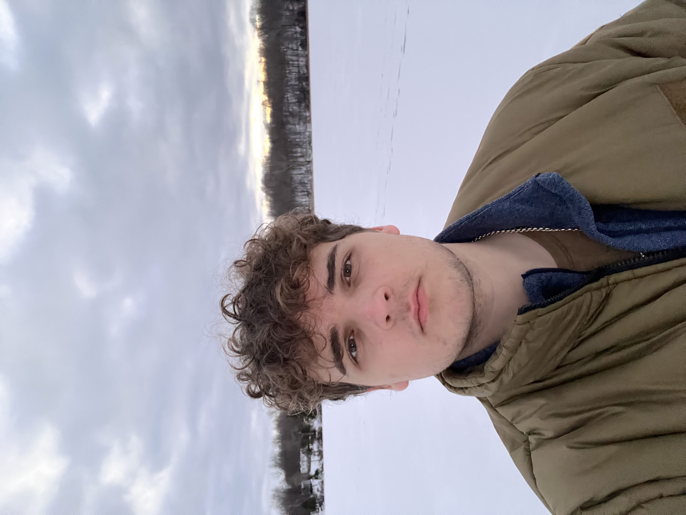

About Me
My name is Oto Klavins. I am currently a student at Algonquin college, in the graphic design program. I was originally born in Latvia and moved to Canada in 2020. I have also lived in England for four years. I enjoy doing sports and working out, as well as doing everything creative, from drawing to videography to woodworking.
During high school I wasn't sure of what I wanted to study after graduation. After some research, I decided to go with the graphic design program because of the possibilities it holds for my future. I understood that graphic design exists everywhere and it is a part of everyday life. Meaning that there will always be something to design and imagine.
"Success consists of going from failure to failure without loss of enthusiasm."- Winston Churchill
My skills
- Creative thinking
- Photography
Graphic Design Courses
- Computer Graphics
- Concept Sketching
- Graphic Design
- Web Design
- Typography
- Personal Finance
- Communications